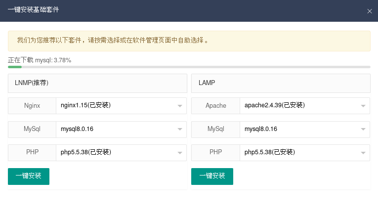
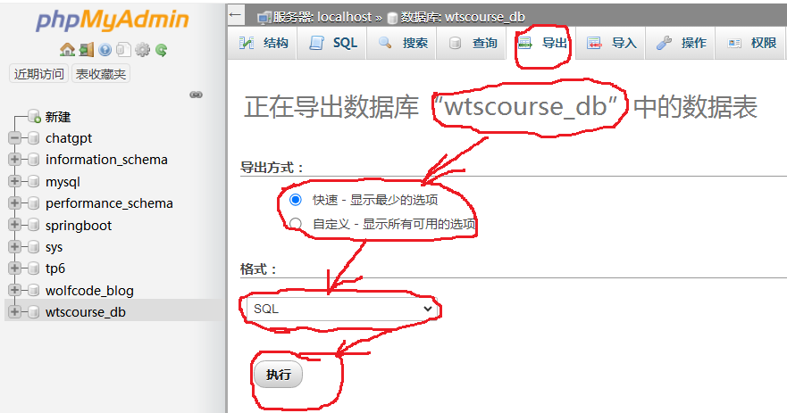

MySql教程
1. LAMP WAMP 和 MySQL
2. gorm介绍
//GORM 是 Go 语言的一个对象关系映射（ORM）库，它提供了一种简单、简洁的方式来与数据库交互，通过让开发人员使用 Go
结构体来代替直接编写 SQL 查询。
//GORM 支持多个数据库后端，例如 MySQL、PostgreSQL、SQLite 和 SQL
Server，并提供自动表创建、模式迁移以及数据库表之间的关联等功能。
//使用 GORM，开发人员可以将模型定义为 Go 结构体，并使用 Create、Save、Update 和 Delete
等方法来与数据库交互。GORM 还提供了查询构建器接口，允许开发人员使用流畅的语法编写复杂的查询
3.MySQL安装 (Linux下可以同时存在MySQL 8.0.35 and phpStudy 8.0.16 in
different directories)
3.1 Linux下载及安装phpStudy:
>yum
install -y wget && wget -O install.sh https://notdocker.xp.cn/install.sh
&& sh install.sh
请用浏览器访问面板:
外网:http://222.20.94.229:9080/69A8E3
内网:http://222.20.94.229:9080/69A8E3
系统初始账号:admin
系统初始密码:lohBP1GAsk (origin)
官网:https://www.xp.cn
如果使用的是云服务器，请至安全组开放9080端口
如果使用ftp，请开放21以及30000-30050端口
[root@localhost opt]# which phpstudy
/usr/bin/phpstudy ///usr/local/phpstudy/system/module
Linux下管理界面：
http://222.20.94.229:9080/69A8E3
(安装完后会自动启动服务，直接用浏览器打开即可)
user: admin / wtsgyh1972@(ok new phpStudy linux
centos7.9 kernel 6.6)
接着就进入管理页面了（第一次进入之后会提示安装套件，一些基本套件已经安装，就差Mysql数据库了，点击一键安装）
opt]# rpm -qa | grep mysql
3.2 Linux下载rpm报并安装mysql
# wget
https://repo.mysql.com/mysql80-community-release-el7.rpm (or
download from: https://repo.mysql.com/)
# yum -y install /home/catalyst/下载/mysql80-community-release-el7.rpm
安装并启动mysql服务器
$yum -y install mysql-community-server
安装 3 软件包 (+4 依赖软件包)
升级 ( 4
依赖软件包)
总计：91 M
总下载量：89 M
启动mysql 8.0.xx(于之前的mysql稍有不同！！！)
$systemctl start mysqld.service (sure for mysql 8.0.35 in
CENTOS 7.9wts)
$systemctl enable mysqld.service
$systemctl daemon-reload
查看运行状态
$systemctl status mysqld.service
修改mysql默认密码
提示：在mysql5.7以后，密码不能设置过于简单的，否则会出现ERROR：Your password does not satisfy
the current policy requirements，解决方法就是调整MySQL密码验证规则，修改 policy 和
length 的值
首先查看mysql登录密码
第一次安装mysql时会自动生成一个临时密码存在mysqld.log文件中，
使用yum安装，直接查看/var/log/mysqld.log. 如用源码包安装 就去解压包里面找mysqld.log文件.
这里是以我安装为例
vim /var/log/mysqld.log
2023-12-16T08:04:51.002183Z 0 [System] [MY-013169] [Server]
/usr/sbin/mysqld (mysqld 8.0.35) initializing of server in progress
as process 16938
2023-12-16T08:04:51.375489Z 1 [System] [MY-013576] [InnoDB] InnoDB
initialization has started.
2023-12-16T08:05:05.806213Z 1 [System] [MY-013577] [InnoDB] InnoDB
initialization has ended. A temporary password is generated for
root@localhost: ZXFshn+:o1*E
2023-12-16T08:05:10.820396Z 6 [Note] [MY-010454] [Server] A
temporary password is generated for root@localhost: ZXFshn+:o1*E
2023-12-16T08:05:24.210766Z 0 [System] [MY-010116] [Server]
/usr/sbin/mysqld (mysqld 8.0.35) starting as process 17030
2023-12-16T08:05:24.228692Z 1 [System] [MY-013576] [InnoDB] InnoDB
initialization has started.
2023-12-16T08:05:24.906939Z 1 [System] [MY-013577] [InnoDB] InnoDB
initialization has ended.
2023-12-16T08:05:25.367150Z 0 [Warning] [MY-010068] [Server] CA
certificate ca.pem is self signed.
2023-12-16T08:05:25.367245Z 0 [System] [MY-013602] [Server] Channel
mysql_main configured to support TLS. Encrypted connections are now
supported for this channel.
2023-12-16T08:05:25.414325Z 0 [System] [MY-011323] [Server] X Plugin
ready for connections. Bind-address: '::' port: 33060, socket:
/var/run/mysqld/mysqlx.sock
2023-12-16T08:05:25.414695Z 0 [System] [MY-010931] [Server]
/usr/sbin/mysqld: ready for connections. Version: '8.0.35'
socket: '/var/lib/mysql/mysql.sock' port: 3306 MySQL
Community Server - GPL.
A temporary password is generated for root@localhost: ZXFshn+:o1*E
登录
xxxx的地方填写 mysql密码，但这里输入密码时明文的（不推荐）
$mysql -uroot -p
然后输入密码即可！！！wtssure
如果忘记了密码，在CENTOS:
编辑/etc/my.cnf文件，在末尾出增加 skip-grant-tables
datadir=/var/lib/mysql
socket=/var/lib/mysql/mysql.sock
log-error=/var/log/mysqld.log
pid-file=/var/run/mysqld/mysqld.pid
skip-grant-tables
***************************************************
# mysql -uroot
mysql> use mysql;
Reading table information for completion of table and column names
You can turn off this feature to get a quicker startup with -A
Database changed
mysql> update user set authentication_string='' where
User='root';
Query OK, 1 row affected (0.00 sec)
Rows matched: 1 Changed: 1 Warnings: 0
mysql> flush privileges; //Query OK, 0 rows
affected (0.00 sec)
mysql> quit
将 /etc/my.cnf 中 的 skip-grant-tables 去掉；
再次重启mysql服务()
systemctl restart mysqld (sure in CENTOS 7.9wts)
再次登录mysql，登录密码为空，然后修改root密码
mysql>mysql -uroot
mysql> ALTER USER 'root'@'localhost' IDENTIFIED BY
'WTSgyh1972!'; //just for another added: biodb:
WTSgyh_1972
mysql> use mysql; //如果第一次用要先改密码，再：>use mysql
Query OK, 0 rows affected (0.02 sec)
mysql>flush privileges; //刷新权限
关闭mysql 8.0服务
mysqld_safe命令
mysqladmin命令是推荐的关闭mysql服务的命令
# mysqladmin -uroot -p -S /var/lib/mysql/mysql.sock shutdown
MySQL的启动和关闭命令相比Oracle而言，显得有点多了
其实记住，生产环境启动服务使用 mysqld_safe，关闭服务使用 mysqladmin就可以了
Windows:
可以直接用phpStudy来启动httpd和MySQL(如果MySQL不能从phpStudy启动则:
cd
/d/APPsoftwares/phpstudypro810164bitGreen/Extensions/MySQL8.0.12/bin
(git bash shell user: root passwd:
root <=== phyStudy GUI)
mysqld.exe --console; 就可以启动mysql server)
$ ./mysqld.exe --console
2024-01-11T13:23:25.521522Z 0 [System] [MY-010116] [Server]
D:\APPsoftwares\phpstudypro810164bitGreen\Extensions\MySQL8.0.12\bin\mysqld.exe
(mysqld 8.0.12) starting as process 8492
100 200
100 200
2024-01-11T13:24:00.947804Z 0 [System] [MY-010229] [Server]
Starting crash recovery...
2024-01-11T13:24:00.947804Z 0 [System] [MY-010232] [Server] Crash
recovery finished.
2024-01-11T13:24:03.067925Z 0 [System] [MY-010931] [Server]
D:\APPsoftwares\phpstudypro810164bitGreen\Extensions\MySQL8.0.12\bin\mysqld.exe:
ready for connections. Version: '8.0.12' socket: ''
port: 3306 MySQL Community Server - GPL.
现在linux: phpStudy mysql 8.0.16 can start from phpstudy web!!!
记得：CENTOS 7启动： phpStudy
>phpstudy -start 然后看到下面的界面，一定要点： 一键安装！！！！

[root@localhost bin]# ./mysql -uroot
ERROR 2002 (HY000): Can't connect to local MySQL server through
socket '/tmp/mysql.sock' (2) <<<<not
started by phpstudy GUI WEB!!!!
NOW Start from PHPstudy GUI web html page: ====>
cd /usr/local/phpstudy/soft/mysql/mysql-8.0.16/bin
# ./mysql -uroot //no
password!!!!!!????????????? still modyfi: my.cnf:
add lastline: skip-grant-tables
restart: mysqld from phpstudy GUI web!!!! now ok!!! then mod the
root password:
>use mysql;
>update user set authentication_string='' where User='root';
>flush privileges;
将 /etc/my.cnf 中 的 skip-grant-tables 去掉；
mysql> use mysql;
Reading table information for completion of table and column names
You can turn off this feature to get a quicker startup with -A
Database changed
mysql> ALTER USER 'root'@'localhost' IDENTIFIED BY 'WTSgyh1972!';
Query OK, 0 rows affected (0.01 sec)
mysql> flush privileges;
Query OK, 0 rows affected (0.01 sec)
!!!!!!!!!!!!!!wts sure for phpStudy mysql 8.0.16 of CENTOS
7.9!!!!!!!!!!!!!!!!!!!!!KERNEL 6.6 UPDATED!!!!
mysql> show databases;
+--------------------+
|
Database
|
+--------------------+
| information_schema |
|
mysql
|
| performance_schema |
|
sys
|
|
www
| <<<<< added by phpstudy!!!
+--------------------+
5 rows in set (0.01 sec)
CENTOS: phpStudy,
http://127.0.0.1:9080/69A8E3#/user/login
admin/wtsgyh1972@
使用MYSQL：
windows phpstudy mysql 8.0.12
>mysql.exe -uroot -p
password: root (phpStudy)
mysql> select @@version; //看看版本号
+-----------+
| @@version |
+-----------+
| 8.0.35 |
+-----------+
1 row in set (0.00 sec)
mysql> show databases;
+--------------------+
|
Database
|
+--------------------+
| information_schema |
|
mysql
|
| performance_schema |
|
sys
|
+--------------------+
4 rows in set (0.01 sec)
mysql> create database chatgpt;
//现在就可以在phpStudy GUI界面上看到了!!!!WTS
//同时新增目录:
D:\APPsoftwares\phpstudypro810164bitGreen\Extensions\MySQL8.0.12\data
Query OK, 1 row affected (0.00 sec)
mysql> use chatgpt;
Database changed
mysql> show tables;
Empty set (0.00 sec)
MySQL创建表的代码
创建MySQL的表:
语法:CREATE TABLE table_name (id INT AUTO_INCREMENT PRIMARY KEY, name VARCHAR(50) NOT NULL, age INT, email VARCHAR(100) UNIQUE );
如:
mysql>use chatgpt;
mysql>
/////////////CREATE TABLE users (id INT AUTO_INCREMENT PRIMARY KEY, name VARCHAR(50) NOT NULL, age INT, email VARCHAR(100) UNIQUE, created_at VARCHAR(100) NOT NULL);
mysql>CREATE TABLE yl_enrol(id bigint AUTO_INCREMENT
primary KEY, name varchar(10) NOT NULL UNIQUE COMMENT '姓名', qq
bigint NOT NULL COMMENT'QQ',
//job varchar(10) not null COMMENT '职位',
//enroll_time varchar(30) NOT NULL COMMENT '入学时间',
//school varchar(20) NOT NULL COMMENT '毕业院校',
//number text NOT NULL COMMENT'线上学号',
//diary_link text NOT NULL COMMENT'日报链接',
//flag text NOT NULL COMMENT'立愿',
//brother varchar(10) NOT NULL COMMENT'辅导师兄',
//location varchar(20) NOT NULL COMMENT'来源'
//)ENGINE=INNODB charset utf8;
//忽略两个字段，添加即可
//ALTER TABLE yl_enrol ADD(create_at bigint NOT NULL COMMENT'创建时间',
//update_at bigint NOT NULL COMMENT'更新时间'
//);
注意： MySQL创建表时列名为：Usage可能会报错，但是可以用： `Usage` BIGINT,
mysql>CREATE TABLE `point_info` (`id` BIGINT(19) NOT NULL COMMENT
'自增ID', `product_key` VARCHAR(50) NOT NULL COMMENT '产品标识' COLLATE
'utf8mb4_general_ci',
`device_name` VARCHAR(50) NOT NULL COMMENT '设备名称' COLLATE
'utf8mb4_general_ci', `point_id` VARCHAR(50) NOT NULL COMMENT '测点ID'
COLLATE 'utf8mb4_general_ci', PRIMARY KEY (`id`) USING BTREE
)
COMMENT='测点信息'
COLLATE='utf8mb4_general_ci'
ENGINE=InnoDB;
命令行查寻MySQL数据表中的数据:
mysql> use chatgpt;
mysql> SELECT * FROM `users` ORDER BY `users`.`id` LIMIT 1;
ERROR 2006 (HY000): MySQL server has gone away
No connection. Trying to reconnect...
Connection id: 2
Current database: chatgpt
+----+----------------+----------------------+---------------------+
| ID |
Name |
Email
|
CreatedAT
|
+----+----------------+----------------------+---------------------+
| 1 | ffffffffffffff | bbbbbbbbbbbbbbbbbbbb | 2023-12-18
00:00:00 |
+----+----------------+----------------------+---------------------+
1 row in set (0.19 sec)
use sqldeveloper connect mysql: 不能建表！！！
$ wget
https://dev.mysql.com/get/Downloads/Connector-J/mysql-connector-java-8.0.19.zip
unzip: to mysql-connector-java-8.0.19.jar
open: sqldeveloper:
将MySQL JDBC驱动程序添加到Oracle SQL Developer：
单击“Tools”菜单，然后单击“Preferences”。
在“Preferences”窗口中，展开“Database”选项卡并选择“Third Party
JDBC Drivers”。
单击“Add Entry”来添加MySQL JDBC驱动程序。
浏览到您下载并解压缩的:
/opt/xtal/mysql-connector-java-8.0.19.jar
单击“Open”以添加驱动程序。
现在就有了MySQL选项了。
连接MySQL数据库
单击“File”菜单，然后单击“New Connections”。
在“New / Select Database
Connection”对话框中，选择“MySQL”。
输入您的MySQL数据库连接信息，例如：
Connection Name: mysql80
Username: root
Password: WTSgyh1972!
Hostname: localhost
Port: 3306
SID: chatGPT
单击“测试”以检查连接是否正常。
如果一切正常，单击“连接”
使用phpStudy进行MySQL的导出(备份)和导入(还原)
可以直接用:
http://localhost/phpMyAdmin4.8.5/import.php
网页版管理界面
1. 导出:
选择一个数据库, 然后点击导出即可得到一个xxxx.sql文件(其中就有要备份的数据)
点击导出按钮后:

导入mysql数据数据: 同样使用phpMyAdmin 网页界面:
比如要导入备份tp6:
1. 选建数据库: tp6， 然后点击这个tp6，再点击导入就行了.
3. mysql import csv 文件：
可能会报错: MYSQL写入数据并创建文件出现ERROR 1290 (HY000): The MySQL
server is running with the --secure-file-priv option so it cannot
execute this statement
mysql> show global variables like
'%secure_file_priv%';
//找到有secure_file_priv权限的目录
ERROR 2013 (HY000): Lost connection to MySQL server during query
+------------------+-----------------------+
| Variable_name |
Value
|
+------------------+-----------------------+
| secure_file_priv | /var/lib/mysql-files/ |
+------------------+-----------------------+
1 row in set (0.01 sec)
windows:
修改： my.ini: 加上一行: secure-file-priv=''
//记得要这样!!!!!! 两个单引号!!!!
******************
[mysqld]
port=3306
default_authentication_plugin=mysql_native_password
basedir=D:/APPsoftwares/phpstudypro810164bitGreen/Extensions/MySQL8.0.12/
datadir=D:/APPsoftwares/phpstudypro810164bitGreen/Extensions/MySQL8.0.12/data/
secure-file-priv=''
character-set-server=utf8
**********************************************************
然后将csv文件放到：
D:\APPsoftwares\phpstudypro810164bitGreen\Extensions\MySQL5.7.26\data\chatgpt
重启:
mysql>mysqld.exe --console
mysql>mysql.exe -uroot -p (随后输入密码: WTSgyh1972!)
mysql> show variables like '%secure%';
+--------------------------+--------+
|
Variable_name
| Value |
+--------------------------+--------+
| require_secure_transport | OFF |
|
secure_auth
| ON |
| secure_file_priv
|
|
<<<
这里是这个样子!!!!!
+--------------------------+--------+
3 rows in set, 1 warning (0.00 sec)
mysql> show global variables like '%secure_file_priv%';
+------------------+--------+
| Variable_name | Value |
+------------------+--------+
| secure_file_priv |
|
<<<
这里是这个样子!!!!!
+------------------+--------+
1 row in set, 1 warning (0.00 sec)
批量导数据到MySQL表中
chatuser.csv文件内容如下所示:
id,use,pp,bb,ss,is
2020001,孙思宇,U202011069,8202202011069,1000, 100
2020002,谢子琪,U202011571,8202202011571,1000, 100
2020003,戴晨曦,U202013029,8202202013029,1000, 100
2020004,谢广昊,U202013032,8202202013032,1000, 100
..................................
1 . 命令行方式将要导入的CSV文件复制到该目录下
执行语句：
将CSV文件考到目录：
mysql> use chatgpt;
/var/lib/mysql-files/chatuser.csv
mysql> LOAD DATA INFILE
'/var/lib/mysql-files/chatuser.csv' INTO TABLE
users FIELDS TERMINATED BY ',' ENCLOSED BY '"'
LINES TERMINATED BY '\n' IGNORE 1 ROWS;
// 文件路径"/",注意这没有LOCAL关键字的 --
在数据库中创建的要插入的表的名称 -- 以','为分隔符 --
去掉字符串中包裹的符号'"' -- 以'\n'为行间分隔符
Query OK, 68 rows affected (0.02 sec)
Records: 68 Deleted: 0 Skipped: 0 Warnings: 0
or:
mysql> LOAD DATA INFILE 'chatuser.csv' INTO TABLE users FIELDS
TERMINATED BY ',' ENCLOSED BY '"' LINES TERMINATED BY '\n' IGNORE 1
ROWS;
Query OK, 68 rows affected (0.03 sec)
Records: 68 Deleted: 0 Skipped: 0 Warnings: 0
H:\goworkspaces\arvintian
-- 忽略第一行，因为第一行往往是表头
2. web方式导入批量数据:
成功导入:
4. 创建vue3godb（just for CENTOS 7.9 with phpStudy linux）
4.1 boot linux(自动启动mysql 8.0.16)
4.2
cd /usr/local/phpstudy/soft/mysql/mysql-8.0.16/bin
bin]# ./mysql -uroot -p (ps: WTSgyh1972!)
mysql> create database vue3godb;
插入数据：
一条数据：
mysql> insert into list(id,
created_at,updated_at,deleted_at,name,state,phone,email,address)
value(1,20240112,20240112,20240115,'wts','wudan',
'15578934453','wudan@wat.com', 'wuhui 1027');
Query OK, 1 row affected (0.01 sec)
如果插入多条数据，可以：
1. 写需要写多条sql；
2.Values参数后多行插入
mysql> insert into list(id,
created_at,updated_at,deleted_at,name,state,phone,email,address)
values(3,20240112,20240112,20240115,'gyh','gyhsan',
'15578934454','gyhdan@wat.com', 'xuhui 9457'),
(4,20240112,20240112,20240115,'wzt','nandan',
'15578934456','wztai@huo.com', 'jaling 5980'),
(5,20240112,20240112,20240115,'watsi','koulong',
'15578934456','watisan@wat.com', 'chnongi 18459');
Query OK, 3 rows affected (0.00 sec)
Records: 3 Duplicates: 0 Warnings: 0
在MySQL中导入SQL文件，下面几种实现方法：
1. 使用MySQL命令行工具：可以使用以下命令将SQL文件导入到MySQL数据库中：
mysql -u username -p database_name < path/to/vue3godb.sql
其中，username是数据库用户名，database_name是要导入到的数据库名称，path/to/sql_file.sql是SQL
文件的路径。在运行命令后，会提示输入数据库密码，输入密码后，就会将SQL文件中的内容导入数据库。
2. 用MySQL的图形界面工具：可以使用MySQL自带的图形界面工具（如phpMyAdmin、MySQL
Workbench等）打开数据库连接，然后选择要导入SQL文件的数据库。接下来，可以使用工具提供的导入功能（导入选项卡或菜单）来选择并导入SQL
文件。
3.
常用 source 命令
mysql> source
/run/media/catalyst/TOSHIBA/vue3gocruddemo/vue3goserv/resources/script/sql/vue3godb.sql
(for t_db_instance)
结果会出现下面的字样:
Query OK, 1 row affected (0.00 sec)
对于windows下面则用:
mysql>source
e:\xxxxx\vue3godb.sql(具体路径改为你实际的目录)
4.
使用编程语言连接数据库：如果你在使用某个编程语言开发应用程序，可以使用相应的数据库连接库（如Python的mysql-connector-
python、Java的jdbc等）来连接到MySQL数据库，并执行SQL文件中的语句。具体实现方法取决于编程语言和所使用的库，一般可以
使用类似以下的伪代码
import mysql.connector
cnx = mysql.connector.connect(user='username', password='password', host='localhost', database='database_name')
cursor = cnx.cursor()
with open('path/to/vue3godb.sql', 'r') as file:
sql_script = file.read()
statements = sql_script.split(';')
for statement in statements:
cursor.execute(statement)
cnx.commit()
cursor.close()
cnx.close()
***************************************
5. mysql密码加密： 注：如无特殊原因，建议用更安全的新加密方式。
MySQL8.0版本之前，MySQL使用的加密方式是“mysql_native_passowrd"，在MySQL8.0之后，加密的方
式改为“caching_sha2_password”，从字面意思理解，后者的加密方式应该更高效，以便提升客户端的连接速度。
;MySQL 8.0 在用户管理方面增加了角色管理，默认的密码加密方式也做了调整，由之前的 SHA1 改为了 SHA2。同时加上
MySQL 5.7 的禁用用户和用户过期的功能，MySQL 在用户管理方面的功能和安全性都较之前版本大大的增强了。
查看相关资料说8.0以上版本去掉了select password()函数
mysql> show variables like 'default_authentication_plugin';
+-------------------------------+-----------------------+
|
Variable_name
|
Value
|
+-------------------------------+-----------------------+
| default_authentication_plugin | caching_sha2_password |
+-------------------------------+-----------------------+
1 row in set (0.01 sec)
mysql> select user,host,plugin from mysql.user;
+------------------+-----------+-----------------------+
|
user
| host |
plugin
|
+------------------+-----------+-----------------------+
| mysql.infoschema | localhost | caching_sha2_password |
| mysql.session | localhost |
caching_sha2_password |
| mysql.sys | localhost
| caching_sha2_password |
|
root
| localhost | caching_sha2_password |
+------------------+-----------+-----------------------+
4 rows in set (0.00 sec)
如果需要保持之前的验证方式并保持之前版本的密码加密方式需要在配置文件 my.cnf 中修改以下配置项
*******************************************
[mysqld]
default_authentication_plugin = mysql_native_password
并重启服务后生效
即：如果想： select password('admin');
将 MySQL 8.0 中已有的 SHA2 密码修改为 SHA1 的模式。
# 更新用户的密码加密方式为之前版本的方式
mysql> ALTER USER 'root'@'127.0.0.1' IDENTIFIED WITH
mysql_native_password BY 'password';
# 刷新权限
mysql> FLUSH PRIVILEGES;
mysql> CREATE USER wtsgyh IDENTIFIED BY 'wtsgyh1972';
ERROR 1819 (HY000): Your password does not satisfy the current
policy requirements //密码太简单了，改复杂一点即可。
mysql> CREATE USER wtsgyh IDENTIFIED BY 'WWWwtsgyh1972!';
Query OK, 0 rows affected (0.01 sec)
mysql> select user from mysql.user;
+------------------+
|
user
|
+------------------+
| wtsgyh
|
| mysql.infoschema |
| mysql.session |
| mysql.sys |
|
root
|
+------------------+
5 rows in set (0.00 sec)
mysql> use mysql;
Reading table information for completion of table and column names
You can turn off this feature to get a quicker startup with -A
Database changed
查看加密的用户密码：
mysql> select host,user,authentication_string from user;
+-----------+------------------+------------------------------------------------------------------------+
| host |
user
|
authentication_string
|
+-----------+------------------+------------------------------------------------------------------------+
| % |
wtsgyh |
$A$005$bVzR}e&8s�U,Mx`Q�#�oFzNU0E7oAh.za/61.TlX1fuEiuA4xdja/uDehkhZI7
|
| localhost | mysql.infoschema |
$A$005$THISISACOMBINATIONOFINVALIDSALTANDPASSWORDTHATMUSTNEVERBRBEUSED
|
| localhost | mysql.session |
$A$005$THISISACOMBINATIONOFINVALIDSALTANDPASSWORDTHATMUSTNEVERBRBEUSED
|
| localhost | mysql.sys |
$A$005$THISISACOMBINATIONOFINVALIDSALTANDPASSWORDTHATMUSTNEVERBRBEUSED
|
| localhost |
root
| $A$005$X�)!Ch9
}Q.Rl�7iIQSdIOV6Gn5O02bUEK9brMS0JretNkOzIz/Af41nRnyly1 |
+-----------+------------------+------------------------------------------------------------------------+
5 rows in set (0.00 sec)
mysql> UPDATE t_sys_account SET Password =
'$A$005$bVzR}e&8sU,Mx`Q#oFzNU0E7oAh.za/61.TlX1fuEiuA4xdja/uDehkhZI7'
WHERE id = 1;
ERROR 1406 (22001): Data too long for column 'password' at
row 1
<<<<<<<<<<<<<<<表中的某个字段长度不
够！！！
修改表某个字段的数据类型
mysql>alter table vue3godb.t_sys_account modify
password varchar(100);
mysql> UPDATE t_sys_account SET Password =
'$A$005$bVzR}e&8sU,Mx`Q#oFzNU0E7oAh.za/61.TlX1fuEiuA4xdja/uDehkhZI7'
WHERE id = 1;
Query OK, 1 row affected (0.00 sec)
Rows matched: 1 Changed: 1 Warnings: 0